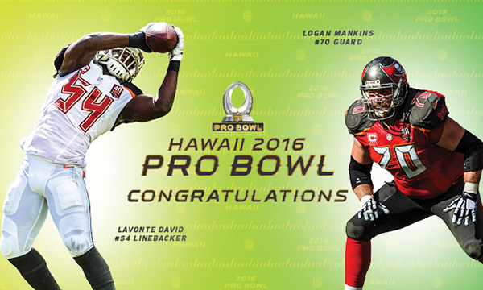

Team Irvin Players
Team Rice Players
Scores
The 2016 Pro Bowl Draft is upon us, and Pro Football Hall of Famers Michael Irvin and Jerry Rice are crafting their rosters for Sunday's all-star game in Hawaii. Check out the rosters below. The draft is being broadcast on ESPN2.

QB Russell Wilson (Seahawks)
WR Julio Jones (Falcons)
CB Richard Sherman (Seahawks)
DE Ezekiel Ansah (Lions)
DE Michael Bennett (Seahawks)
WR A.J. Green (Bengals)
WR DeAndre Hopkins (Texans)
RB Todd Gurley (Rams)
OLB Anthony Barr (Vikings)
CB Desmond Trufant (Falcons)
WR Allen Robinson (Jaguars)
LB Lavonte David (Buccaneers)
TE Tyler Eifert (Bengals)
QB Jameis Winston (Buccaneers)
DE Carlos Dunlap (Bengals)
QB Teddy Bridgewater (Vikings)
TE Delanie Walker (Titans)
S Reshad Jones (Dolphins)
OLB Sean Lee (Cowboys)
CB Adam Jones (Bengals)
RB Latavius Murray (Raiders)
S Malcolm Jenkins (Eagles)
CB Dominique Rodgers-Cromartie (Giants)
FS Harrison Smith (Vikings)
QB Eli Manning (Giants)
DE Khalil Mack (Raiders)
WR Jarvis Landry (Dolphins)
QB Derek Carr (Raiders)
WR Amari Cooper (Raiders)
CB Marcus Peters (Chiefs)
RB Adrian Peterson (Vikings)
OLB Tamba Hali (Chiefs)
DE Everson Griffen (Vikings)
CB Vontae Davis (Colts)
WR T.Y. Hilton (Colts)
CB Brent Grimes (Dolphins)
RB Doug Martin (Buccaneers)
TE Travis Kelce (Chiefs)
S Eric Berry (Chiefs)
LB Julius Pepper (Packers)
DE Cameron Jordan (Saints)
QB Tyrod Taylor (Bills)
TE Gary Barnidge (Browns)
OLB Elvis Dumervil (Ravens)
RB Chris Ivory (Jets)
CB Jason Verrett (Chargers)
SS Mike Adams (Colts)
SS Charles Woodson (Raiders)
Show the Scores
To Top